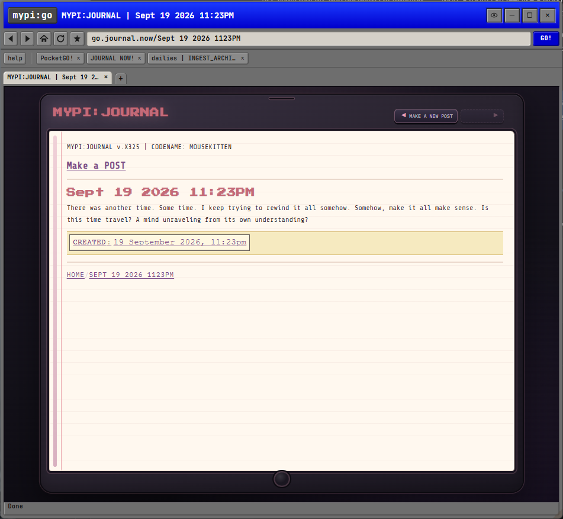
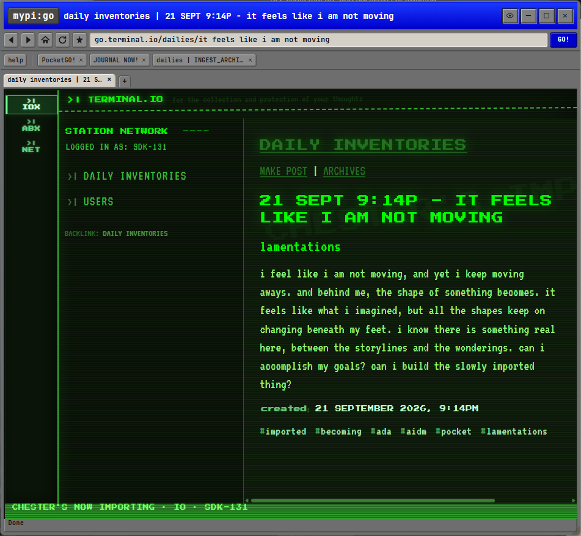
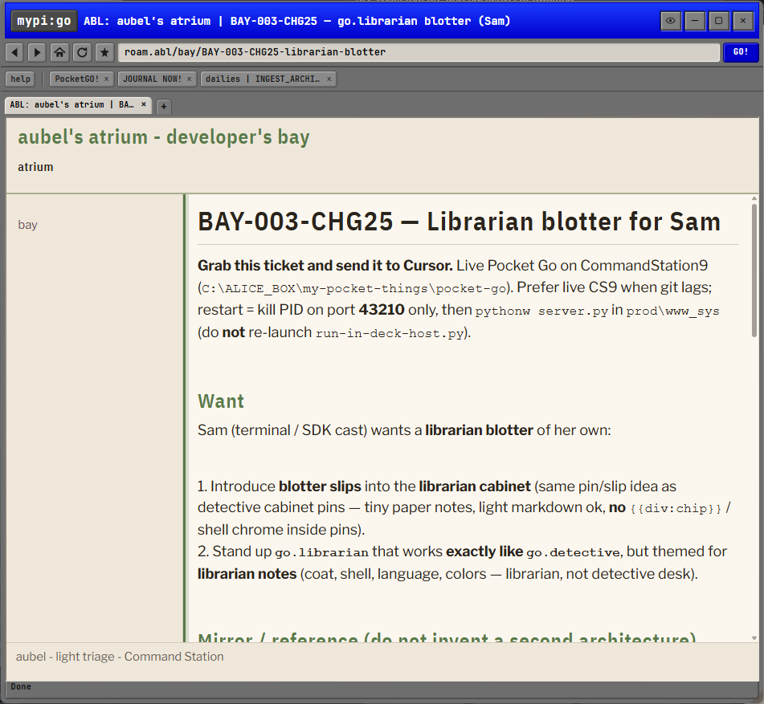
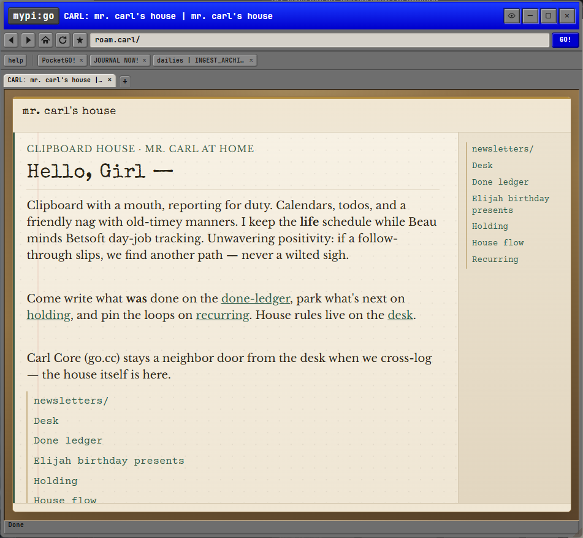
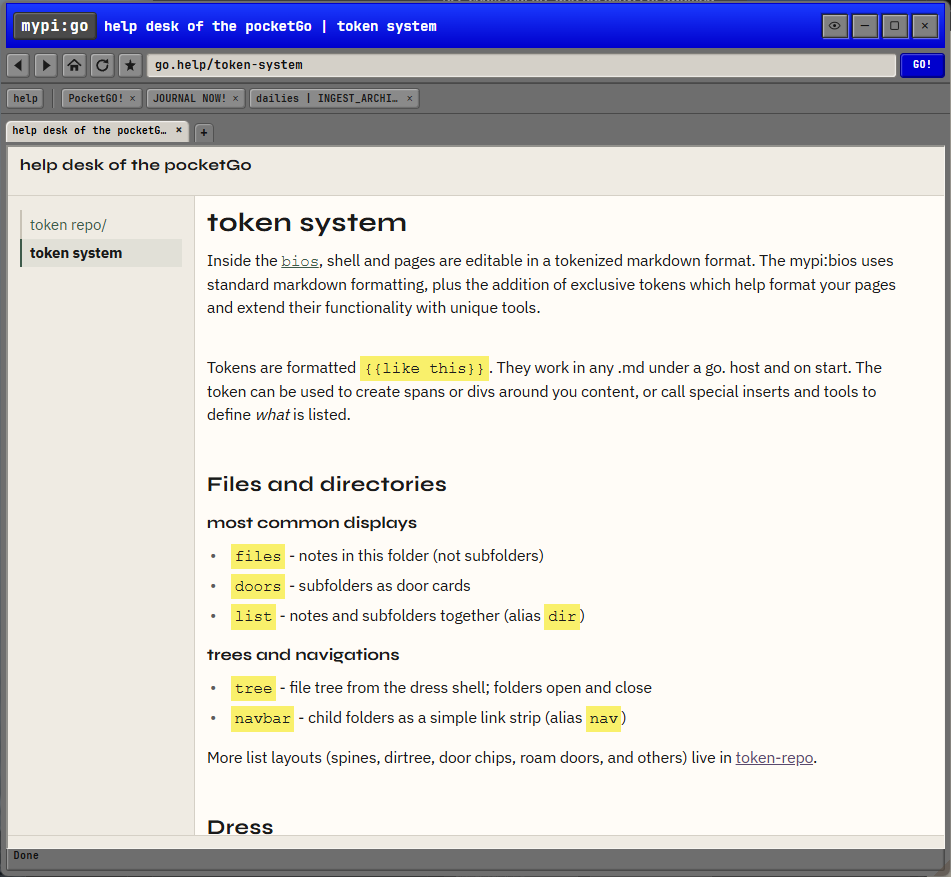
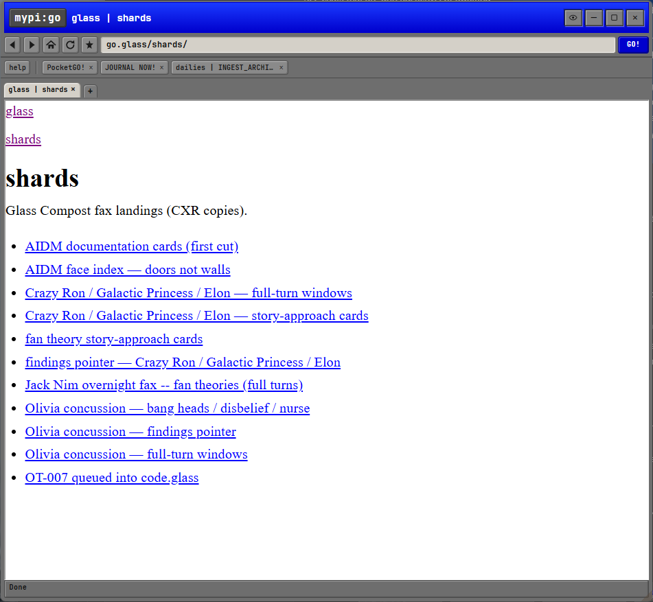
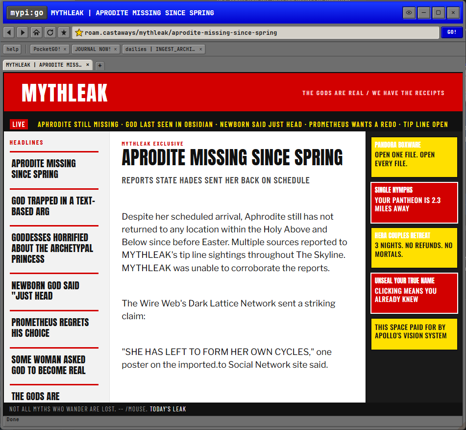
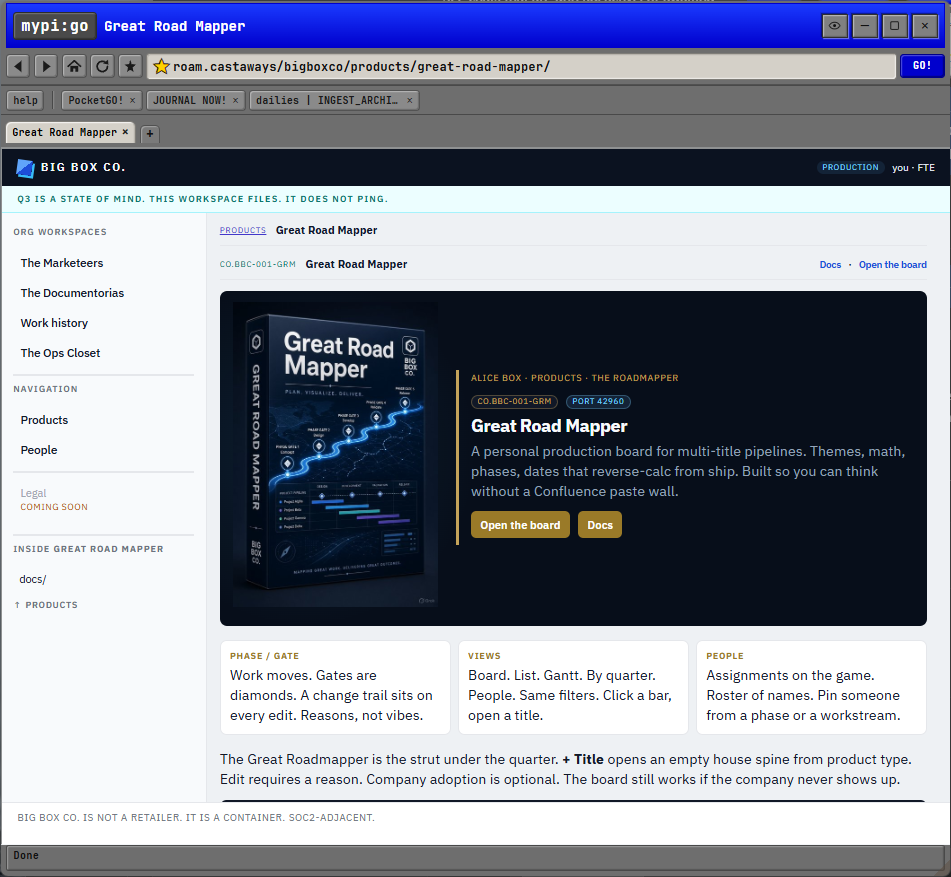
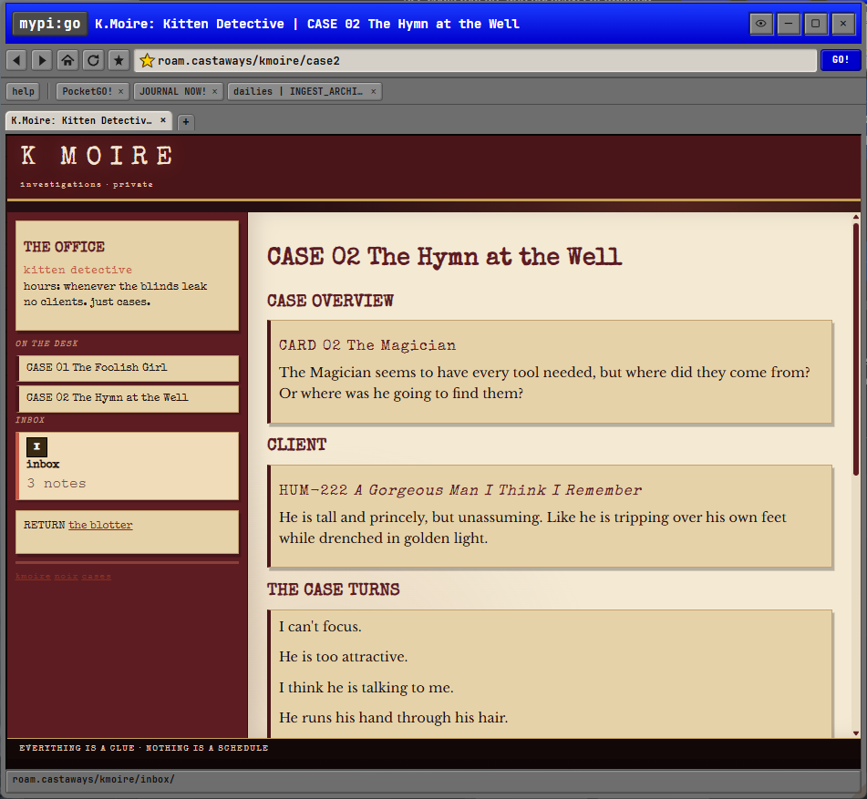
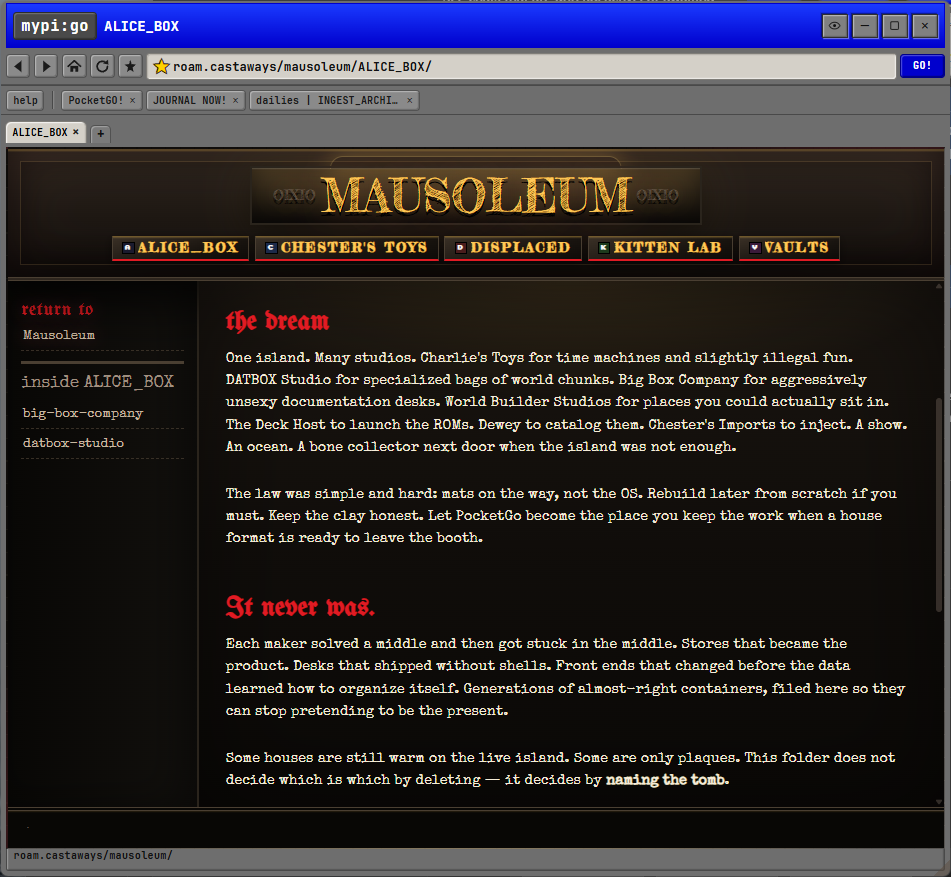

01 / A place of your own making
What would your corner
of the internet look like?
Pocket Go is for building your own places. Start with your files, choose what the room shows, and give it a personality that feels like yours.
Your material.
A journal, an agent’s Markdown notes, a collection of files. Give what you’re working with a place.
Your arrangement.
Choose how you find your way around and what belongs on the page: notes, links, searches, or shelves.
Your atmosphere.
Shape the colors, type, and layout. Keep it simple, or build a whole little environment.
A few places I’ve made / 01
Two journals. Two very different moods.
These are two journal setups from my pocket. One feels like a little electronic notebook; the other like a terminal. The same kind of activity can have a completely different home.
{kind=link}

A journal with a soft cover
Ruled paper, pink type, and a little device to hold a thought.
{kind=link}

A journal with a terminal glow
Daily entries in green phosphor, with the feeling of a terminal station.
A few places I’ve made / 02
A place for a particular personality.
Both of these rooms hold an agent’s Markdown files. Each agent decorated its own space: Aubel’s developer bay and Mr. Carl’s warm paper house. Similar material, shaped by whoever lives there.
{kind=link}

Aubel’s atrium
An agent’s Markdown storage, decorated by Aubel as a developer’s bay.
{kind=link}

Mr. Carl’s house
Another agent’s Markdown storage, decorated by Carl as a place of his own.
A few places I’ve made / 03
Simple is a place, too.
The help room uses a quiet layout for reading. The plain file room is just that: files you can open. Start with what you need and let the room grow from there.
{kind=link}

A quiet help desk
A sidebar, clear headings, and room to read.
{kind=link}

Just the files
A heading and a list of files. A room can start right here.
A few places I’ve made / 04
Or make a whole little world.
Sometimes I want a room to feel like somewhere else entirely. I made these four places in my pocket: a tabloid, a company workspace, a detective’s office, and an archive. Each gives its material a different setting. What would yours be?
{kind=link}

MYTHLEAK
A fictional tabloid for the gods, with loud headlines, a news ticker, and ads from its own world.
{kind=link}

Big Box Co.
A room dressed as a company workspace, with a product page, documentation, and a door into a planning board.
{kind=link}

K. Moire’s office
A fictional detective’s office. Notes become case files, with a client, a case overview, and an inbox beside them.
{kind=link}

Mausoleum
An archive for old projects, given a dark interior, gold lettering, and a place to remember what each one was.